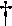

Unlike the Self-Consistent Reaction Field model [74], the Conductor-like Screening Model (COSMO) is a continuum approach [30] which, while more complicated, is computationally quite efficient. The expression for the total screening energy is simple enough to allow the first derivatives of the energy with respect to atomic coordinates to be easily evaluated.
The COSMO procedure generates a conducting polygonal surface around the system (ion or molecule), at the van der Waals' distance. By introducing a ε-dependent correction factor,
into the expressions for the screening energy and its gradient, the theory can be extended to finite dielectric constants with only a small error.
The accuracy of the method can be judged by how well it reproduces known quantities, such as the heat of solution in water (water has a dielectric constant of 78.4 at 25 C). Here, the keywords used were:
C). Here, the keywords used were:
NSPA=60 GRADIENTS 1SCF EPS=78.4 AM1 CHARGE=1
A test is provided to allow COSMO to be validated.
From the Table we see that the glycine zwitterion becomes the stable form in water, while the neutral species is the stable gas-phase form.
(After the COSMO paper was published, improvements in the method made the results shown in the Table invalid. However, the general conclusion that the method is of useful accuracy is still true.)
The COSMO method is easy to use, and the derivative calculation is of sufficient precision to allow gradients of 0.1 to be readily achieved.
Calculated and Observed Hydration Energies (files)
|
Compound |
Method |
|
Hydration |
||
|
|
|
gas phase |
solution phase |
|
Enthalpy(exp.)  |
|
NH4+ |
AM1 |
150.6 |
67.29 |
83.3 |
88.0 |
|
N(Me)4+ |
AM1 |
157.1 |
103.6 |
53.5 |
59.9 |
|
N(Et)4+ |
AM1 |
130.4 |
84.1 |
46.3 |
57.0 |
|
Glycine |
|
|
|
|
|
|
neutral |
AM1 |
-101.6 |
-110.4 |
8.8 |
- |
|
zwitterion |
AM1 |
-58.0 |
-106.9 |
48.9 |
- |
 : Y. Nagano, M. Sakiyama, T. Fujiwara, Y. Kondo, J. Phys. Chem., 92, 5823 (1988).
: Y. Nagano, M. Sakiyama, T. Fujiwara, Y. Kondo, J. Phys. Chem., 92, 5823 (1988).
The solvent accessible surface is a continuous surface of the molecule which can be reached by the center of charge of a solvent molecule. The calculation of the SAS is carried out as follows:
From this definition of the SAS we see that the SAS of each atom is a surface of radius equal to the van der Waals' radius plus the radius of the solvent molecule minus the distance of the center of charge of the solvent molecule to the center of the solvent molecule. In other words, the radius is the VdW radius plus the distance from the surface of the solvent molecule to the center of charge of the solvent molecule. By default, this extra distance is zero. Only that part of the atom surface which can be touched by the solvent molecule is used. This means that only those atoms on the surface of the molecule can contribute to the SAS. Of those atoms that are on the surface of the molecule there will be parts of the surface which cannot be reached by the solvent because the solvent molecule is too bulky.